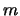
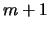
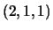
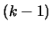
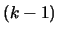
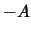

The following options are available for cdd. These options are set if they appear in input file after the ``end'' command. Independent options can be set simultaneously, but each option must be written separately in one line, and two options should not be written in one line. When two or more non-independent options are specified, the last one overrides the others. Also note that options are case-sensitive.
When the input_incidence option is selected, the incidence relation for each input with respect to output will be generated. The default filename is *.icd if input is inequalities (i.e. *.ine), and *.ecd if input is extreme points and rays (i.e. *.ext). This option was added to cdd+ ver. 0.74 and not available in cdd.
Here, an extreme point is said to be incident with an inequality if the inequality is satisfied by equality. An extreme ray is said to be incident with an inequality if .
For example, since the incidence option was set for the example input file ucube.ine in the previous section, the program outputs the following ucube.ecd file:
*Incidences of output(=vertices/rays) and input (=hyperplanes) * for each output, #incidence and the set of hyperplanes containing it * or its complement with its cardinality with minus sign *cdd input file : ucube.ine (6 x 4) *cdd output file: ucube.ext begin 5 6 7 3 : 1 4 5 3 : 3 4 5 3 : 2 3 5 -3 : 3 4 7 -1 : 5 endAfter ``begin'', there are three numbers . The first number is a number of output (vertices and rays). The next number is , the number of inequalities in the input file. The last number is usually , and if the input linear inequality system is homogeneous (i.e., has zero RHS) or the hull option is chosen. The number corresponds to the infinity constraint which is added for vertex/ray enumeration when the input system is not homogeneous.
The incidence data starts right after these three numbers. At each line, the cardinality of incident inequalities and the list of their indices are given. There is an exception that, when there are more incident inequalities than non-incident ones, then the program outputs the list of non-incident inequalities with its size with negative sign. This is to save space of output.
For example, the first output line
corresponds to the
first vertex of ucube.ext file in previous section, that is,
the vertex . The first number is simply the number
of incident inequalities and the rest is the indices of
those inequalities, and so the 1st, 4th and 5th inequalities are
satisfied by equality at this vertex. The last output
corresponds to the ray  . Since all inequalities
except the last (5th) inequality are incident with this ray,
the output is the (shorter) complementary list with its cardinality (=1) with negative
sign. Note that the full list would be
. Since all inequalities
except the last (5th) inequality are incident with this ray,
the output is the (shorter) complementary list with its cardinality (=1) with negative
sign. Note that the full list would be
 , where
is the infinity plane. One can ignore the infinity
plane for some purposes, but for analyzing the combinatorial
structure of polyhedra, it is
very important information.
, where
is the infinity plane. One can ignore the infinity
plane for some purposes, but for analyzing the combinatorial
structure of polyhedra, it is
very important information.
Also, since the input_incidence option was set for the example input file ucube.ine in the previous section, the program outputs the following ucube.icd file:
*cdd input file : ucube.ine (6 x 4) *cdd output file: ucube.ext *Incidence of input (=inequalities/facets) w.r.t. output (=vertices/rays). *row 7 is redundant;dominated by: 1 2 3 4 6 *row 6 is redundant;dominated by: 1 2 begin 6 5 5 -2 : 2 3 -2 : 1 2 -2 : 1 4 -2 : 3 4 -1 : 5 2 : 4 5 1 : 5 endAfter ``begin'', there are three numbers . The first number is a number of input (inequalities). The next number is , the number of vertices and rays in the output file. The last number is always for all *.icd files. The remaining lines can be interpreted similarly with ucube.ecd file. The input_incidence option is not available in cdd.
The #incidence option can be used when you do not wish to output the incidence file but to output only the cardinality of incidence for each output, at the end of each output line.
The incidence files (adjacency file, input_adjacency as well) can be created independently after *.ext file is created, see ``postanalysis'' option.
*Adjacency List of output (=vertices/rays) *cdd input file : ucube.ine (6 x 4) *cdd output file: ucube.ext begin 5 1 3 : 2 4 5 2 3 : 1 3 5 3 3 : 2 4 5 4 3 : 1 3 5 5 4 : 1 2 3 4 endThe first number is simply the number of outputs of cdd, the number of vertices and rays in this case. The second line says that the first output of ucube.ext file has degree (valency) , and its three neighbors are 2nd, 4th and 5th output.
When the computation is to obtain the hull (inequality system), the adjacency is of course that of inequalities (i.e. facets).
The adjacency file (incidence file, input_adjacency file) can be created independently after *.ext file is created, see ``postanalysis'' option.
The default file name for this output is *.iad. This file lists the redundancy information of input also. For the example ``ucube.ine'' above, the following ``ucube.iad'' will be generated:
*Adjacency List of input (=inequalities/facets) *cdd input file : ucube.ine (6 x 4) *cdd output file: ucube.ext *row 7 is redundant;dominated by: 1 2 3 4 6 *row 6 is redundant;dominated by: 1 2 begin 7 1 3 : 2 4 5 2 3 : 1 3 5 3 3 : 2 4 5 4 3 : 1 3 5 5 4 : 1 2 3 4 6 0 : 7 0 : endObserve that the 6th inequality and the artificially added 7th inequality (infinity) are found redundant. The 7th inequality is redundant because the first four facets intersects at a single infinity point (corresponding to a unique extreme ray) and hence the polyhedron has no infinity facet, although the polyhedron is not bounded.
The input_adjacency file can be created independently after *.ext file is created, see ``postanalysis'' option.
While cdd+ uses both *.ine and *.ext files to compute the adjacency of input, it can be computed very efficiently by linear programming technique, using only the input data. This will be explained in the Polyhedral computation FAQ [Fuk04].
The default is lexmin ordering which simply order inequalities
with respect to lexico-graphic ordering of rows of  . The lexmax
is reverse of lexmin. The mincutoff (maxcutoff) option selects an inequality which
cuts off the minimum (maximum) number of vertices/rays of the st polyhedron.
The mixcutoff option is the mixture of mincutoff and maxcutoff which selects
an inequality which cuts off the st polytope as unbalanced as possible.
The maxcutoff option might be efficient if the input contains
many redundant inequalities (many interior points for hull computation).
The minindex option selects the hyperplanes from the top of
the input.
. The lexmax
is reverse of lexmin. The mincutoff (maxcutoff) option selects an inequality which
cuts off the minimum (maximum) number of vertices/rays of the st polyhedron.
The mixcutoff option is the mixture of mincutoff and maxcutoff which selects
an inequality which cuts off the st polytope as unbalanced as possible.
The maxcutoff option might be efficient if the input contains
many redundant inequalities (many interior points for hull computation).
The minindex option selects the hyperplanes from the top of
the input.
The random option selects the inequalities in a random order. This option must be followed by a random seed which is positive integer (less than 65536). For example, random 123 specifies the random option with the random seed 123.
This option is not default. The default follows the same ordering as the ordering of inequalities chosen. This means that if lexmin is the ordering of inequalities, then the initial independent rows will be chosen sequentially with lexico-min ordering. There are exceptions when this rule is not applicable, i.e. when one of mincutoff or maxcutoff options is chosen. In such cases, lexmin ordering will be chosen.
| various comments | ||
| H-representation | ||
| begin | ||
| numbertype | ||
|  | ||
| end | ||
| maximize | ||
The minimize option works exactly same way for minimization of a linear objective function. See the sample input file ``lptest.ine''. The program cdd will output both primal and dual optimal solutions if the LP is solvable. If the LP is infeasible (dual infeasible), then it will output an evidence.
For the moment, one can use either the dual simplex method (option ``dual-simplex'', default) or the criss-cross method by Terlaky-Wang. The latter method can be specified by option ``criss-cross'' and is very sensible to the ordering of inequalities. The ordering options such as maxindex, lexmin and random will affect the behavior of this solver. Try to use a different ordering, if the computation takes too much time.
Also, in order to see the intermediate LP sign tableau one can use ``show_tableau'' option. Also use ``manual_pivot'' option to select pivots manually. Of course, these options are intended for very small problems.
The minimize and maximize options should be used only in H-representation (*.ine) files, and the output filename is ``*.lps''.
This option should be used only in H-representation (*.ine) files, and the output filename is ``*.lps''.
When the option ``vertex_listing'' is set, the program checks for each i-th row of the input whether the associated point determines a vertex of the polyhedron. This option should be used only in V-representation (*.ext) files, and the output filename is ``*.vis''.
After *.vis or *.fis file (say test.vis) is obtained, one can get the minimal nonredundant system by using the included gawk script get_essential:
% get_essential < test.vis >test\_ess.ineYou must have a gnu gawk command accessible at the current unix directory. One must edit the new file test_ess.ine slightly according to the instruction written in the file.
| various comments | ||
| H-representation | ||
| begin | ||
| numbertype | ||
| end | ||
| partial_enumeration | ||
The strict_inequality option follows the same grammar as partial_enumeration or equality. With this, cdd outputs only those vertices and rays not satisfying any of the specified inequalities with equality. See the sample files, partialtest1.ine and partialtest2.ine.
These options make no effect on LP maximization or minimization.
| H-representation | ||
| begin | ||
| numbertype | ||
| end | ||
| preprojection | ||
Then, cdd+ will output the inequality system, , together with the list of extreme rays of the homogeneous cone . Consequently, the inequality system represents the projection of the original polyhedron onto -space with possible redundancy. The default file names for the inequality system output and the extremal ray output are *sub.ine and *.ext, respectively if the input file is named *.ine.
There is a supplementary C program, called domcheck, written by F. Margot, EPFL, which generates quickly a minimal (i.e. nonredundant) system from these two outputs. This program can be obtained from the standard ftp site for cdd.